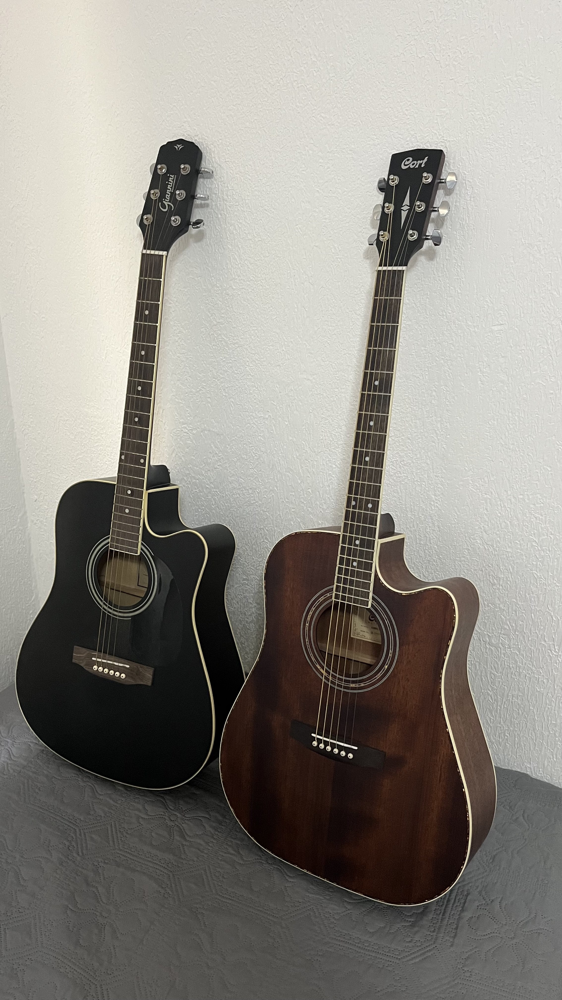

Acredito que uma forma boa de se saber sobre a vida de alguém é pedi-la para listar coisas que a descrevam por ordem de prioridades, então vou imaginar que me pediram para fazer isso. Segue então algumas das coisas que considero importantes na minha vida.
Início
Faculdade
Após o término do Ensino médio não sabia ainda o que gostaria de cursar na faculdade, então fiz o ENEM sem um objetivo claro, mas percebi que me identificava com exatas e vi uma oportunidade de cursar computação na UNIFAL-MG.
Academia
Desde os 15 anos tenho uma boa frequência na prática de musculação, movido principalmente pela vontade de não ser magro como costumava ser. Atualmente tenho 93kg, para quem saiu de 69, considero que seja uma bela evolução.
Automobilismo
Desde criança sempre achei incrível dirigir e qualquer coisa que tivesse motor. Depois da série "Drive to Survive", desenvolvi um interesse enorme por corridas de carro. Usei um bom tempo desde então estudando o que envolve uma boa direção competitiva. Gostaria de correr com carros mais potentes do que o kart outdoor, que foi o máximo que já guiei competindo.

Violão
Comecei a tocar na pandemia com a intenção de usar o tempo preso em casa para algo útil. Apesar de ter ficado mais de um ano quase parado no cursinho, depois que entrei na faculdade voltei a tocar. Hoje gosto de aprender músicas para tocar em roda de amigos, focando em aprender músicas sertanejas.